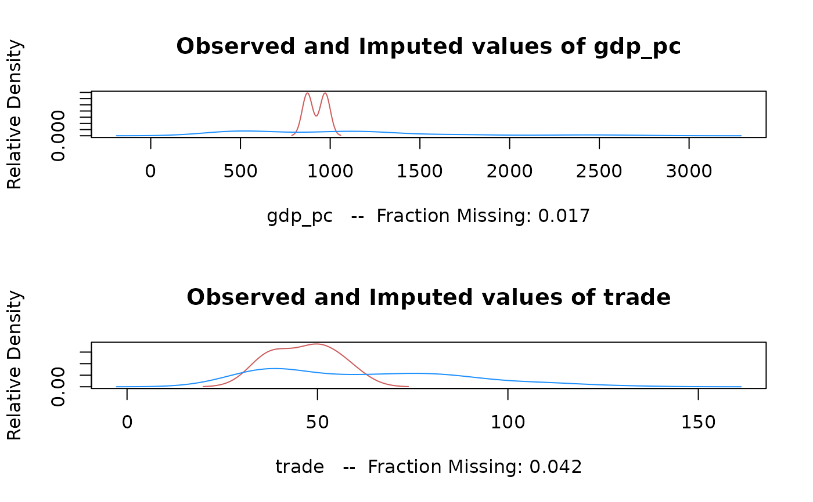

amelia.RdRuns the bootstrap EM algorithm on incomplete data and creates imputed datasets.
amelia(x, ...)
# S3 method for class 'amelia'
amelia(x, m = 5, p2s = 1, frontend = FALSE, ...)
# S3 method for class 'molist'
amelia(x, ...)
# Default S3 method
amelia(
x,
m = 5,
p2s = 1,
frontend = FALSE,
idvars = NULL,
ts = NULL,
cs = NULL,
polytime = NULL,
splinetime = NULL,
intercs = FALSE,
lags = NULL,
leads = NULL,
startvals = 0,
tolerance = 1e-04,
logs = NULL,
sqrts = NULL,
lgstc = NULL,
noms = NULL,
ords = NULL,
incheck = TRUE,
collect = FALSE,
arglist = NULL,
empri = NULL,
priors = NULL,
autopri = 0.05,
emburn = c(0, 0),
bounds = NULL,
max.resample = 100,
overimp = NULL,
boot.type = "ordinary",
parallel = c("no", "multicore", "snow"),
ncpus = getOption("amelia.ncpus", 1L),
cl = NULL,
...
)either a matrix, data.frame, a object of class
"amelia", or an object of class "molist". The first two will call the
default S3 method. The third a convenient way to perform more imputations
with the same parameters. The fourth will impute based on the settings from
moPrep and any additional arguments.
further arguments to be passed.
the number of imputed datasets to create.
an integer value taking either 0 for no screen output, 1 for normal screen printing of iteration numbers, and 2 for detailed screen output. See "Details" for specifics on output when p2s=2.
a logical value used internally for the GUI.
a vector of column numbers or column names that indicates identification variables. These will be dropped from the analysis but copied into the imputed datasets.
column number or variable name indicating the variable identifying time in time series data.
column number or variable name indicating the cross section variable.
integer between 0 and 3 indicating what power of polynomial should be included in the imputation model to account for the effects of time. A setting of 0 would indicate constant levels, 1 would indicate linear time effects, 2 would indicate squared effects, and 3 would indicate cubic time effects.
interger value of 0 or greater to control cubic
smoothing splines of time. Values between 0 and 3 create a simple
polynomial of time (identical to the polytime argument). Values k greater
than 3 create a spline with an additional k-3
knotpoints.
a logical variable indicating if the
time effects of polytime should vary across the
cross-section.
a vector of numbers or names indicating columns in the data that should have their lags included in the imputation model.
a vector of numbers or names indicating columns in the data that should have their leads (future values) included in the imputation model.
starting values, 0 for the parameter matrix from listwise deletion, 1 for an identity matrix.
the convergence threshold for the EM algorithm.
a vector of column numbers or column names that refer to variables that require log-linear transformation.
a vector of numbers or names indicating columns in the data that should be transformed by a sqaure root function. Data in this column cannot be less than zero.
a vector of numbers or names indicating columns in the data that should be transformed by a logistic function for proportional data. Data in this column must be between 0 and 1.
a vector of numbers or names indicating columns in the data that are nominal variables.
a vector of numbers or names indicating columns in the data that should be treated as ordinal variables.
a logical indicating whether or not the inputs to the
function should be checked before running amelia. This should
only be set to FALSE if you are extremely confident that your
settings are non-problematic and you are trying to save computational
time.
a logical value indicating whether or
not the garbage collection frequency should be increased during the
imputation model. Only set this to TRUE if you are experiencing memory
issues as it can significantly slow down the imputation
process
an object of class "ameliaArgs" from a previous run of Amelia. Including this object will use the arguments from that run.
number indicating level of the empirical (or ridge) prior. This prior shrinks the covariances of the data, but keeps the means and variances the same for problems of high missingness, small N's or large correlations among the variables. Should be kept small, perhaps 0.5 to 1 percent of the rows of the data; a reasonable upper bound is around 10 percent of the rows of the data.
a four or five column matrix containing the priors for either individual missing observations or variable-wide missing values. See "Details" for more information.
allows the EM chain to increase the empirical prior if
the path strays into an nonpositive definite covariance matrix, up
to a maximum empirical prior of the value of this argument times
n, the number of observations. Must be between 0 and 1, and at
zero this turns off this feature.
a numeric vector of length 2, where emburn[1] is
a the minimum EM chain length and emburn[2] is the
maximum EM chain length. These are ignored if they are less than 1.
a three column matrix to hold logical bounds on the
imputations. Each row of the matrix should be of the form
c(column.number, lower.bound,upper.bound) See Details below.
an integer that specifies how many times Amelia
should redraw the imputed values when trying to meet the logical
constraints of bounds. After this value, imputed values are
set to the bounds.
a two-column matrix describing which cells are to be
overimputed. Each row of the matrix should be a c(row,column) pair.
Each of these cells will be treated as missing and
replaced with draws from the imputation model.
choice of bootstrap, currently restricted to either
"ordinary" for the usual non-parametric bootstrap and
"none" for no bootstrap.
the type of parallel operation to be used (if any). If
missing, the default is taken from the option
"amelia.parallel" (and if that is not set, "no").
integer: the number of processes to be used in parallel operation: typically one would choose the number of available CPUs.
an optional parallel or snow cluster for use if
parallel = "snow". If not supplied, a cluster on the local
machine is created for the duration of the amelia call.
An instance of S3 class "amelia" with the following objects:
a list of length m with an imputed dataset in
each entry. The class (matrix or data.frame) of these entries will
match x.
an integer indicating the number of imputations run.
a matrix identical in size to the original dataset with 1 indicating a missing observation and a 0 indicating an observed observation.
An array with dimensions \((p+1)\) by \((p+1)\) by \(m\) (where
\(p\) is the number of variables in the imputations model) holding
the converged parameters for each of the m EM chains.
A \(p\) by \(m\) matrix of of the posterior modes for the complete-data means in each of the EM chains.
An array with dimensions \((p)\) by \((p)\) by \(m\) where the first two dimensions hold the posterior modes of the covariance matrix of the complete data for each of the EM chains.
a integer indicating the exit code of the Amelia run.
an exit message for the Amelia run
a list of iteration histories for each EM chain. See documentation for details.
a instance of the class "ameliaArgs" which holds the arguments used in the Amelia run.
a vector of values removed for overimputation. Used to reformulate the original data from the imputations.
Note that the theta, mu and covMatrcies objects
refers to the data as seen by the EM algorithm and is thusly centered,
scaled, stacked, tranformed and rearranged. See the manual for details
and how to access this information.
Multiple imputation is a method for analyzing incomplete
multivariate data. This function will take an incomplete dataset in
either data frame or matrix form and return m imputed datatsets
with no missing values. The algorithm first creates a bootstrapped
version of the original data, estimates the sufficient statistics
(with priors if specified) by EM on this bootstrapped sample, and
then imputes the missing values of the original data using the
estimated sufficient statistics. It repeats this process m
times to produce the m complete datasets where the
observed values are the same and the unobserved values are drawn
from their posterior distributions.
The function will start a "fresh" run of the algorithm if x is
either a incomplete matrix or data.frame. In this method, all of the
options will be user-defined or set to their default. If x
is the output of a previous Amelia run (that is, an object of
class "amelia"), then Amelia will run with the options used in
that previous run. This is a convenient way to run more
imputations of the same model.
You can provide Amelia with informational priors about the missing
observations in your data. To specify priors, pass a four or five
column matrix to the priors argument with each row specifying a
different priors as such:
one.prior <- c(row, column, mean,standard deviation)
or,
one.prior <- c(row, column, minimum, maximum, confidence).
So, in the first and second column of the priors matrix should be the row and column number of the prior being set. In the other columns should either be the mean and standard deviation of the prior, or a minimum, maximum and confidence level for the prior. You must specify your priors all as distributions or all as confidence ranges. Note that ranges are converted to distributions, so setting a confidence of 1 will generate an error.
Setting a priors for the missing values of an entire variable is done
in the same manner as above, but inputing a 0 for the row
instead of the row number. If priors are set for both the entire
variable and an individual observation, the individual prior takes
precedence.
In addition to priors, Amelia allows for logical bounds on
variables. The bounds argument should be a matrix with 3
columns, with each row referring to a logical bound on a variable. The
first column should be the column number of the variable to be
bounded, the second column should be the lower bounds for that
variable, and the third column should be the upper bound for that
variable. As Amelia enacts these bounds by resampling, particularly
poor bounds will end up resampling forever. Amelia will stop
resampling after max.resample attempts and simply set the
imputation to the relevant bound.
If each imputation is taking a long time to converge, you can increase
the empirical prior, empri. This value has the effect of smoothing
out the likelihood surface so that the EM algorithm can more easily find
the maximum. It should be kept as low as possible and only used if needed.
Amelia assumes the data is distributed multivariate normal. There are a number of variables that can break this assumption. Usually, though, a transformation can make any variable roughly continuous and unbounded. We have included a number of commonly needed transformations for data. Note that the data will not be transformed in the output datasets and the transformation is simply useful for climbing the likelihood.
Amelia can run its imputations in parallel using the methods of the
parallel package. The parallel argument names the
parallel backend that Amelia should use. Users on Windows systems must
use the "snow" option and users on Unix-like systems should use
"multicore". The multicore backend sets itself up
automatically, but the snow backend requires more setup. You
can pass a predefined cluster from the
parallel::makePSOCKcluster function to the cl
argument. Without this cluster, Amelia will attempt to create a
reasonable default cluster and stop it once computation is
complete. When using the parallel backend, users can set the number of
CPUs to use with the ncpus argument. The defaults for these two
arguments can be set with the options "amelia.parallel" and
"amelia.ncpus".
Please refer to the Amelia manual for more information on the function or the options.
amelia(amelia): Run additional imputations for Amelia output
amelia(molist): Perform multiple overimputation from moPrep
amelia(default): Run core Amelia algorithm
Honaker, J., King, G., Blackwell, M. (2011). Amelia II: A Program for Missing Data. Journal of Statistical Software, 45(7), 1–47. doi:10.18637/jss.v045.i07
For imputation diagnostics, missmap,
compare.density,
overimpute and disperse. For time series
plots, tscsPlot. Also: plot.amelia,
write.amelia, and ameliabind
data(africa)
a.out <- amelia(x = africa, cs = "country", ts = "year", logs = "gdp_pc")
#> -- Imputation 1 --
#>
#> 1 2 3
#>
#> -- Imputation 2 --
#>
#> 1 2 3
#>
#> -- Imputation 3 --
#>
#> 1 2 3
#>
#> -- Imputation 4 --
#>
#> 1 2
#>
#> -- Imputation 5 --
#>
#> 1 2
#>
summary(a.out)
#>
#> Amelia output with 5 imputed datasets.
#> Return code: 1
#> Message: Normal EM convergence.
#>
#> Chain Lengths:
#> --------------
#> Imputation 1: 3
#> Imputation 2: 3
#> Imputation 3: 3
#> Imputation 4: 2
#> Imputation 5: 2
#>
#> Rows after Listwise Deletion: 115
#> Rows after Imputation: 120
#> Patterns of missingness in the data: 3
#>
#> Fraction Missing for original variables:
#> -----------------------------------------
#>
#> Fraction Missing
#> year 0.00000000
#> country 0.00000000
#> gdp_pc 0.01666667
#> infl 0.00000000
#> trade 0.04166667
#> civlib 0.00000000
#> population 0.00000000
#>
plot(a.out)
